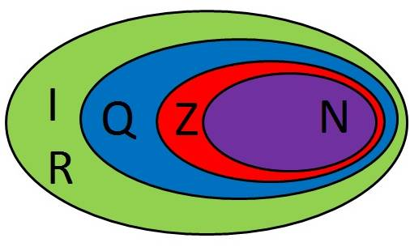

1ºBimestre
O QUE SÃO CONJUNTOS NUMÉRICOS
São coleções de números que compartilham alguma característica em comum, além do fato de serem números.Conjuntos numéricos são coleções de números que possuem características semelhantes. Eles nasceram como resultado das necessidades da humanidade em determinado período histórico.
COMO SE CLASSIFICAM E PROPRIEDADES
O conjunto dos números naturais é representado por (N). Ele reúne os números que usamos para contar (incluindo o zero) e é infinito.
O conjunto dos números inteiros é representado por Z. Reúne todos os elementos dos números naturais (N) e seus opostos. Assim, conclui-se que N é um subconjunto de Z (N ⊂ Z)
O conjunto dos números racionais é representado por Q. Reúne todos os números que podem ser escritos na forma p/q, sendo p e q números inteiros e q≠0. Note que todo número inteiro é também número racional. Assim, Z é um subconjunto de Q. as dízimas periódicas são números racionais. Elas são números decimais que se repetem após a vírgula, por exemplo: 1,4444444444... Embora possua infinitas casas decimais, pode ser escrito como a fração 13/9.
O conjunto dos números irracionais é representado por I. Reúne os números decimais não exatos com uma representação infinita e não periódica, por exemplo: 3,141592... ou 1,203040...
O conjunto dos números reais é representado por R. Esse conjunto é formado pelos números racionais (Q) e irracionais (I). Assim, temos que R = Q ∪ I. Além disso, N, Z, Q e I são subconjuntos de R. Mas, observe que se um número real é racional, ele não pode ser também irracional. Da mesma maneira, se ele é irracional, não é racional.

EXEMPLOS DE APLICAÇÃO

FONTES
2ºBimestre
FUNÇÃO POLINOMIAL
A função polinomial é aquela que é definida por uma expressão polinomial. Elas são representadas pela expressão: Expressão polinomial. As funções polinomiais também podem ser chamadas de polinômios, já que cada uma das funções está ligada a um único polinômio.Para calcular o valor numérico de uma função polinomial, basta substituir a variável pelo valor desejado, transformando o polinômio em uma expressão numérica. No estudo de funções polinomiais, é bastante recorrente a representação gráfica. O grau de uma função polinomial é classificado pelo valor do expoente n a variável x do polinômio, sendo que deve ser um inteiro positivo e maior ou igual a zero. Podemos associar um gráfico a uma função polinomial, atribuindo valores a x na expressão p(x). Desta forma, encontraremos os pares ordenados (x,y), que serão pontos pertencentes ao gráfico. Ligando esses pontos teremos o esboço do gráfico da função polinomial.Observe o seu gráfico: Regra geral: - a função do 1º grau f(x) = ax + b é crescente quando o coeficiente de x é positivo (a > 0); - a função do 1º grau f(x) = ax + b é decrescente quando o coeficiente de x é negativo (a < 0).